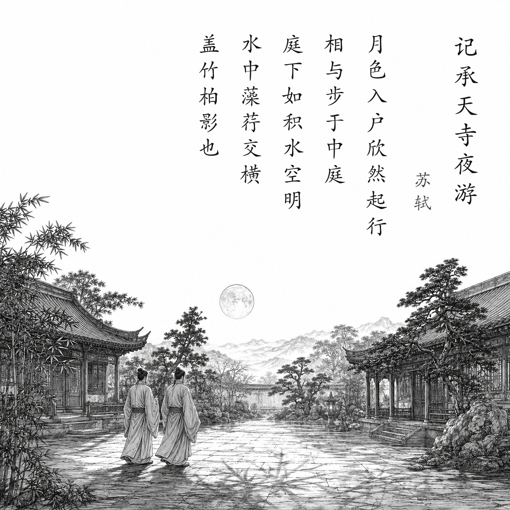

北宋 · 苏轼
记承天寺夜游
元丰六年十月十二日夜，解衣欲睡，月色入户，欣然起行。
念无与为乐者，遂至承天寺寻张怀民。怀民亦未寝，相与步于中庭。
庭下如积水空明，水中藻、荇交横，盖竹柏影也。
何夜无月？何处无竹柏？但少闲人如吾两人者耳。
白话翻译
元丰六年十月十二日夜里，我正要脱衣睡觉，月光照进门来，便高兴地起身出门。
想到没有可以一同游乐的人，于是到承天寺寻找张怀民。他也还没睡，我们便一起在庭院中散步。
月光下的庭院仿佛积着一层清澈透明的水，水中水藻交错纵横，原来那是竹子和柏树的影子。
哪一夜没有月亮？哪里没有竹柏？只是少有像我们两个这样有闲情的人罢了。
为什么写这篇古诗文
1083年，苏轼因“乌台诗案”被贬黄州，身份是没有实权的团练副使。一个普通月夜，他去找同样被贬的朋友张怀民散步。短文把竹柏影写成水中藻荇，最后以“闲人”自称：既有被排挤后的自嘲，也有在困境中仍能发现清美月色的旷达。
关于作者
苏轼（1037—1101），字子瞻，号东坡居士，北宋文学家、书画家，“唐宋八大家”之一。他一生屡遭贬谪，却常把政治困顿转化为开阔、幽默而富有生命力的文字。